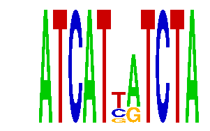

family_17 |
|---|
|  |
| Download PWM |
| Download instances (motifs) |
| Show motif distribution |
Query_ID | Query_Consensus | Subject_Name | Source_DB | Subject_ID | Length | Orientation | Offset | Divergence | Overlap | Subject_Consensus |
|---|---|---|---|---|---|---|---|---|---|---|
| family_17 | ATCATTATCTA | TGATTTRY | JASPAR | PF0094 | 8 | reverse-complement | -4 | 0.052 | 4 | TGATTTAT |
Sequence | Start_position (from start) | Start_position (from end) | Average conservation | Best conservation score | Instance_with_best_CS | Best_Z-score | Instance_with_best_ZS | Strand |
|---|---|---|---|---|---|---|---|---|
| chr2:115699092-115700600 | 822 | 833 | 0.330727 | 0.671 | ATCATNATCTA | 18.433475 | ATCATYRTCTA | -1 |
| chr7:82694274-82695400 | 958 | 969 | 0.441636 | 0.965 | ATCATYRTCTA | 14.270223 | ATCATNATCTA | 1 |
| chr8:64464300-64465500 | 539 | 550 | 0.00190909 | 0.005 | ATCATYRTCTA | 14.270223 | ATCATNATCTA | 1 |
| chr15:27175800-27177300 | 1248 | 1259 | 0.00645455 | 0.029 | ATCATNATCTA | 18.433475 | ATCATYRTCTA | 1 |
| chr6:29825500-29826792 | 752 | 763 | 0.0777273 | 0.139 | ATCATNATCTA | 14.270223 | ATCATNATCTA | 1 |
| chr1:180646615-180648400 | 1018 | 1029 | 0.0130909 | 0.018 | ATCATNATCTA | 18.433475 | ATCATYRTCTA | -1 |
| chr12:118898229-118899229 | 598 | 609 | 9.09091e-05 | 0.001 | ATCATNATCTA | 18.433475 | ATCATYRTCTA | 1 |
| chr1:92876500-92878100 | 1294 | 1305 | 0.077 | 0.083 | ATCATYRTCTA | 18.433475 | ATCATYRTCTA | 1 |
| chr9:24767135-24768900 | 869 | 880 | 0.880364 | 0.883 | ATCATNATCTA | 14.270223 | ATCATNATCTA | -1 |
| chr17:13024600-13025800 | 0 | 11 | 0.132909 | 0.201 | ATCATNATCTA | 18.433475 | ATCATYRTCTA | 1 |
| chr3:122961500-122962800 | 703 | 714 | 0.00581818 | 0.013 | ATCATYRTCTA | 14.270223 | ATCATNATCTA | 1 |
| chrX:163621030-163622030 | 132 | 143 | 0.029 | 0.101 | ATCATYRTCTA | 14.270223 | ATCATNATCTA | 1 |
| chr13:98302700-98304827 | 720 | 731 | 0.00445455 | 0.012 | ATCATYRTCTA | 18.433475 | ATCATYRTCTA | 1 |
| chr10:12149142-12151071 | 495 | 506 | 0.00272727 | 0.009 | ATCATYRTCTA | 18.433475 | ATCATYRTCTA | 1 |
| chr3:136956017-136957496 | 877 | 888 | 0.048 | 0.074 | ATCATYRTCTA | 14.270223 | ATCATNATCTA | 1 |
| chr17:75897424-75898700 | 1042 | 1053 | 0.000454545 | 0.003 | ATCATNATCTA | 14.270223 | ATCATNATCTA | 1 |
| chr14:63974400-63978900 | 1951 | 1962 | 0.0148182 | 0.032 | ATCATYRTCTA | 18.433475 | ATCATYRTCTA | -1 |